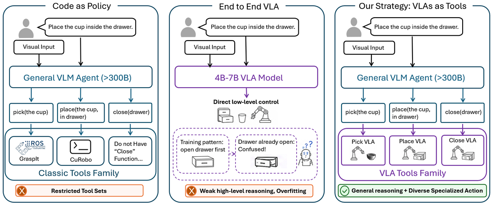
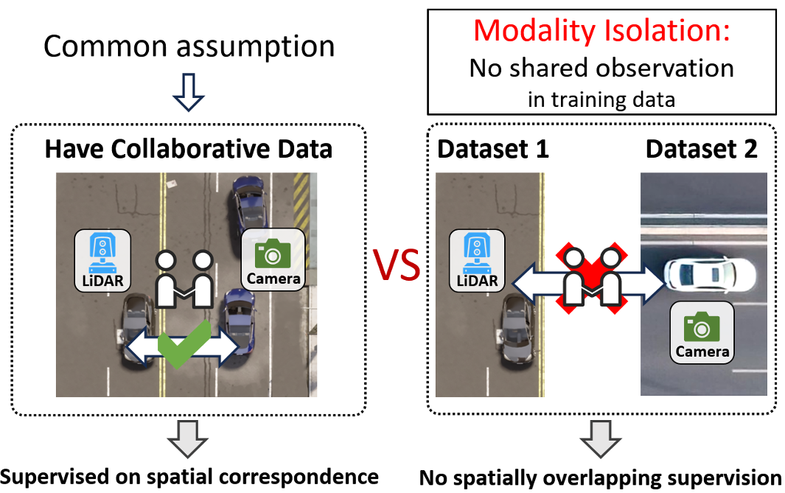
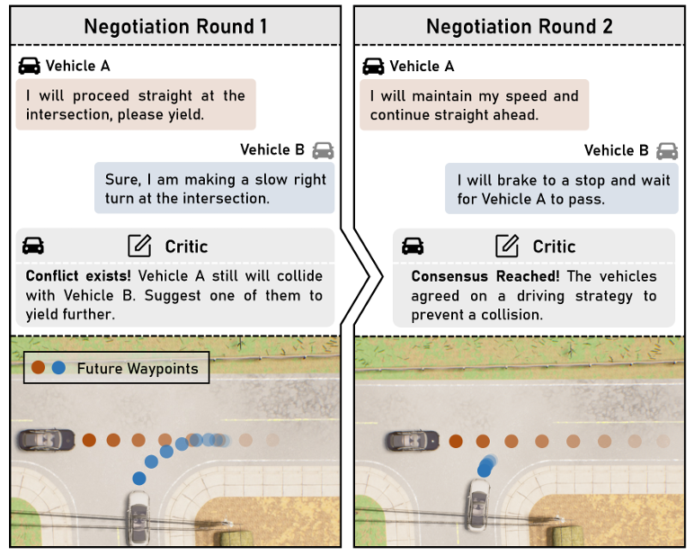
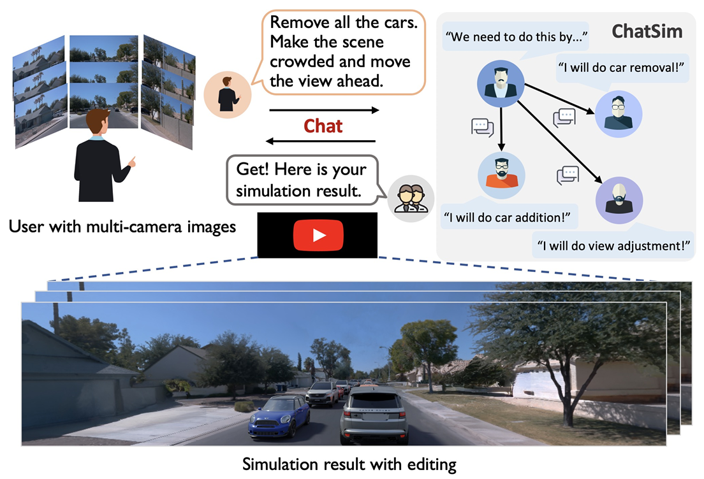

I am a second-year Ph.D. student at
Shanghai Jiao Tong University (SJTU),
advised by Prof. Siheng Chen.
Prior to my Ph.D., I received my Bachelor's degree from SJTU and was awarded
Shanghai Outstanding Graduate.
My current research interest is building generalizable embodied intelligence.
In particular, I focus on diverse behaviors and long-horizon tasks in embodied
intelligence, exploring effective, efficient, and collaborative embodied agent
systems that enable AI to truly improve people's lives in the physical world.
Email /
Google Scholar /
Github /
LinkedIn
- [2026.05] VLAs-as-Tools (preprint) is released. In embodied agent systems, VLA models can be treated as callable tools, allowing each VLA to focus on a specific action while shifting the planning burden to large-scale VLMs to facilitate the execution of long-horizon tasks.
- [2026.03] CodeAlign (poster) is accepted to CVPR 2026, raising an unstudied Modality Isolation scenario in heterogeneous collaborative perception for autonomous driving.
- [2025.10] CoLMDriver (poster) is accepted to ICCV 2025, enabling language-based negotiation among vehicles with real-time control for cooperative autonomous driving.
- [2024.06] ChatSim (highlight) appears at CVPR 2024, supporting editable photo-realistic 3D driving scene simulation via natural language commands.
|
2026
|

|
Towards Long-horizon Embodied Agents with Tool-Aligned Vision-Language-Action Models
Z Lei*, C Liu*, Y Xiong, M Xiong, Y Ding, Z Zhang, W Li, S Chen
arXiv, 2026
Paper
This work proposes VLAs-as-Tools, where a high-level VLM agent performs temporal reasoning and specialized VLA tools execute local physical operations. It improves the success rate of π0.5 by 4.8 points on LIBERO-Long and 23.1 points on RoboTwin, with a 15.0-point gain in invocation fidelity.
|
|

|
Linking Modality Isolation in Heterogeneous Collaborative Perception
C Liu*, Z Chao*, S Chen
CVPR, 2026
Paper
CodeAlign studies modality isolation, where heterogeneous agents with different modalities never co-occur during training, and aligns them through feature-code-feature translation. It uses only 8% of prior alignment parameters, reduces communication by 1024x, and reaches state-of-the-art results on OPV2V and DAIR-V2X.
|
2025
|

|
CoLMDriver: LLM-based Negotiation Benefits Cooperative Autonomous Driving
C Liu*, G Liu*, Z Wang, J Yang, S Chen
ICCV, 2025
Paper
CoLMDriver is a full-pipeline LLM-based cooperative driving system that combines critic-feedback negotiation with intention-guided waypoint generation. On the InterDrive benchmark, it achieves an 11% higher success rate across diverse interactive V2V driving scenarios.
|
2024
|

|
Editable Scene Simulation for Autonomous Driving via Collaborative LLM-Agents
Y Wei*, Z Wang*, Y Lu*, C Xu*, C Liu, H Zhao, S Chen, Y Wang
CVPR, 2024
Paper
ChatSim enables editable photo-realistic 3D driving scene simulation from natural language commands by coordinating LLM agents, multi-camera NeRF rendering, and scene-consistent digital assets. Experiments on Waymo Open Dataset show it can handle complex language commands and generate corresponding photo-realistic scene videos.
|
|
|
Degree: Ph.D. student
Period: 2024 - Present
Major: Computer Science and Technology
Advisor: Prof. Siheng Chen
|
|
|
Degree: Bachelor
Period: 2020 - 2024
Major: Electronic Science and Technology
|
- Shanghai Outstanding Graduate, 2024
- China Optics Valley Scholarship (Optoelectronic Information Award), 2022
- Undergraduate Merit Scholarship, Class B, Shanghai Jiao Tong University, 2021
- Third Prize in Student Social Practice, Shanghai Jiao Tong University, 2021
- Captain of the Basketball Team, School of Electronic Information and Electrical Engineering, 2023-2025
|
Reviewer: ECCV, CVPR, ICCV, ICLR
Hobbies: playing basketball 🏀, eating delicious food 🍜, traveling ✈️.
|
|
{kind=link}